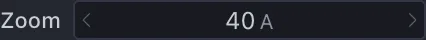

構造の読み込みと表示¶
分子構造を読み込んで表示するまでの操作と、CueMol3 の中心にある Scene / Object / Renderer の考え方を学びます。 題材には 1.2 Å 分解能のリゾチームの結晶構造 (PDB ID: 1QIO) を使います。
基本操作コースの各ページは、この順に進めると前のページの状態を引き継げます。
1. 構造を読み込む¶
File > Get PDB... を開き、PDB Accession Code に 1QIO と入力して取得します。
手元のファイルを開く場合は File > Open File... (Cmd+O) を使います
(→ File メニュー)。
{kind=link}
ダウンロード中は Downloading 1QIO… という進捗画面が出ます。Cancel を押せば中断できます。
存在しない ID を入れた場合は Get PDB failed というエラーが表示されます。
取得が終わると、Open File Options の画面が出ます。いちばん上にはこれから読み込む
ファイル名 (1qio.cif) と、CueMol3 が判別したファイル形式 (mmCIF) が表示されます。
- Object name を
lysozymeに変更します。読み込まれたデータは Object と呼ばれ、 CueMol の中ではこの名前で識別されます (既定ではファイル名由来の名前が入っています) - Renderer type から simple を選びます
- Renderer name は選んだ種類から自動で決まります (
simple1)。ここでは既定のままにします。 この名前はシーンツリーやチュートリアルの以降の説明でそのまま使います - そのほかは既定のまま Open を押します
{kind=link}
分子が線画 (stick モデル) で表示されます。
{kind=link}
Renderer type の種類¶
よく使う表示方法には次のようなものがあります。
- simple
- 線画の stick モデル。パフォーマンス的には trace に次いで高速。細かく見る場合に適している
- trace
- 線画の Cα (タンパク質の場合)、リン原子 (核酸の場合) トレース。パフォーマンス的には 最も高速。大まかに見る場合に適している
- ballstick
- ball and stick モデル表示
- cpk
- CPK モデル表示。空間充填モデルともいう
- tube
- 主鎖のチューブ状モデル表示。trace の発展版のようなもの
- ribbon / cartoon
- いわゆるリボンモデル表示。cartoon はヘリックスを筒状に描く
- nucl
- tube の DNA、RNA 向け発展版。塩基が棒状に表示される
全種類の一覧と詳細は Renderer 一覧 を参照してください。
Renderer type のリストの先頭には、Presets というグループがあります。ここから Default preset 1 などを選ぶと、Renderer を 1 つではなく、タンパク質は ribbon、核酸は nucl、それ以外は ballstick、というように複数の Renderer をまとめたグループが一度に 作られます。プリセットを選んだときは、下の Selection は使えなくなります。
そのほかのオプション¶
- Renderer name — 作られる Renderer の名前。種類を選ぶと自動で埋まります (プリセットの場合はグループ名になります)
- Selection — チェックを入れると隣の欄が有効になり、表示する範囲を選択式で 絞れます。読み込み自体は分子全体に対して行われるので、後から表示範囲を 変更できます (→ 分子の一部を選択する)
- Center view on molecule after loading — 読み込んだ分子へ視点を移動します。 現在の視点を変更したくないときはチェックを外します
- <形式>-specific options — いちばん下の折りたたみです。開くと、その形式に固有の
読み込み設定 (mmCIF / PDB なら Load MODEL records、Load anisotropic U (ANISOU)、
Load alternate conformations、Calculate secondary structure など) が並びます。
既定のままなら見出しの右に
(defaults)、変更すると(modified)と表示されます
2. 視点を操作する¶
読み込んだ分子を、いろいろな向きから眺めてみます。
- 分子ビュー上を左ドラッグします。ドラッグした向きに分子が回転します
- ホイールを回すと、表示が拡大・縮小されます
-
左サイドパネルの Explorer > View パネルで、Zoom / Slab の Zoom の値を クリックし、
40と入力して Enter を押すと、Zoom が 40 に設定されます
Zoom は分子ビューに表示する範囲の高さ (Å) です。値を小さくすると、その分だけ分子が 大きく表示されます。
View パネルの各行は、次の 3 通りで操作できます。
- 左右の矢印を押すと 1 段ずつ増減します
- 数値の上を左右にドラッグすると連続して変化します
- 数値をクリックすると直接入力できる状態になり、Enter で確定します
このように、View パネルはマウスで動かすより正確に視点を合わせたいときに使います。 Rotation (RotX / RotY / RotZ) は相対値で、操作するとその角度だけ回り、操作後、 値は 0 に戻ります。Translation (TraX / TraY / TraZ、Å) と Zoom / Slab (Zoom・Slab・Dist、Å) は 絶対値で、現在の視点の値がそのまま表示されます。
{kind=link}
平行移動やスラブ (手前と奥を切り抜いて表示する範囲) の操作を含めた一覧は マウス・トラックパッド操作、View パネルの各項目は サイドパネル を参照してください。
原子の名称と情報を表示する¶
原子の位置でクリックすると、その原子の名称が分子ビューに表示されます (もう一度クリックすると消えます)。
{kind=link}
さらに、その原子の座標や温度因子など、詳しい情報がウィンドウ最下部のステータスバーに 表示されます (同じ内容が Output パネルにも残ります)。分子 Object 名、チェイン名、 残基名・番号、原子名の順に並び、続いて占有率 (O)、温度因子 (B)、座標が出ます。
{kind=link}
原子の位置で右クリックするとコンテキストメニューが表示されます。一番上は上と同じ原子の 情報で、選んでも何も起こりません。次の Center at this atom を選ぶと、その原子が ビューの中央に来るように視点が移動します。それ以下の Select 関連のメニューは 分子の一部を選択する で説明します。
3. もう 1 つ分子を読み込む¶
同じシーンには複数の Object を読み込めます。ここでは 1G59
(グルタミル tRNA 合成酵素と tRNA の複合体) を追加します。
- File > Get PDB... を開き、PDB Accession Code に
1G59と入力して Download を押します -
Renderer type から trace を選びます
-
Object name は既定のまま (
1g59) にして Open を押します
{kind=link}
タンパク質は Cα 原子、核酸はリン原子だけをつないだ軽量な表示で描かれます。1G59 の 非対称単位には複合体が 2 組 (タンパク質 2 本 + tRNA 2 本) 入っているので、同じ形が 2 つ現れます。
読み込むと視点は新しい分子へ移る (Center view on molecule after loading が既定でオン) ため、この時点ではリゾチームは見えません。両方を同時に見るには、§2 と同じ要領で View パネルを操作します。
- Slab に
300と入力します - Zoom に
150と入力します - RotY に
90と入力します
Slab (奥行き方向に表示する厚み) を広げるのが要点です。既定の 50 Å のままでは、 1G59 から 100 Å ほど離れた位置にあるリゾチームは、Zoom をいくら広げても奥行きで 切り落とされてしまいます。また、3 つの分子は奥行き方向にも重なっているため、 読み込んだ向きのままでは前後に重なって見分けが付きません。RotY で 90° 回すと、 横に並んで見えます。
{kind=link}
特定の Object だけを見たいときは、シーンツリーでその行を選び、パネル上部の Focus ボタンを押します。その Object に合わせて Zoom と Slab が自動で調整されます。
4. Scene・Object・Renderer・View¶
ここまでに登場した概念を整理します。
- Object
- 分子座標・電子密度・静電ポテンシャルなどのデータ。それ自身は画面に現れません
- Renderer
- Object を画面に表示する役割。1 つの Object に複数の Renderer を付けられるので、 同じ分子を ribbon と ballstick で同時に表示する、といったことができます
- Scene
- Object と Renderer をまとめた 1 つの作業単位。ウィンドウ上部のタブが シーンに対応し、複数のシーンを開いても互いに干渉しません
- View
- シーンを映す画面 (分子ビュー) のこと。1 つのシーンに複数の View を 接続することもできます (→ File メニュー の New Tab)
{kind=link}
シーンとは、複数の Object と、それらに接続された Renderer を含む全体だと捉えてください。
5. シーンツリーで全体を把握する¶
左サイドパネルの Explorer > Scene ツリー (シーンツリー) には、シーン内の Object とその配下の Renderer が階層で表示されます (→ サイドパネル)。
行の表記は 名前 (型) です。名前の左の三角をクリックすると、その Object に
接続された Renderer の一覧を開いたり閉じたりできます。いまのツリーは次のように読みます。
- シーン
Untitled 1にlysozymeと1g59の 2 つの Object がある (Get PDB で読み込むと、Object 名は PDB ID の小文字になります) 1g59 (MolCoord)— Object1g59の型は MolCoord (分子座標) であるtrace1 (trace)—1g59に接続された Renderertrace1の型は trace である(*selection)— 名前のない Renderer は括弧と型だけが表示されます。これは選択部分を ハイライト表示するための Renderer で、分子を読み込むと自動で作られます(*namelabel)— §2 で原子をクリックして名称を表示したときに作られた、ラベル用の Renderer です。ラベルを消しても行は残ります
いちばん下の Camera と Styles は、それぞれ保存した視点とスタイルの置き場所です (→ カメラとシーンの保存)。
目のアイコンとパネル上部のボタン¶
- 行の目のアイコンで Renderer の表示・非表示を切り替えられます。Object 行で 切り替えると、配下の Renderer がまとめて切り替わります
- パネル上部には 4 つのボタンがあります (ポインタを載せると名前が出ます)
| ボタン | 動作 |
|---|---|
| Add | 選んでいる Object に Renderer を追加します (右クリックの New Renderer と同じ) |
| Focus | 選んでいる Object や Renderer に合わせて視点 (Zoom と Slab) を調整します |
| Delete | 選んでいる Object や Renderer を削除します。Undo で戻せます |
| Property | 選んでいる項目をプロパティインスペクタに表示します |
シーン行を右クリックすると Background color から背景色を変えられます。
{kind=link}
次のステップ¶
- 分子の一部を選択する — 操作対象を選ぶ方法
- マウス・トラックパッド操作 / サイドパネル
確認対象: CueMol3 2.3.8.495